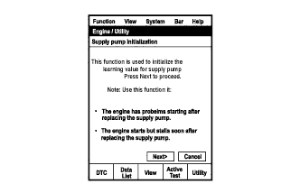
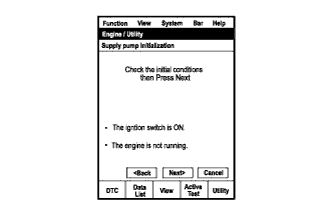
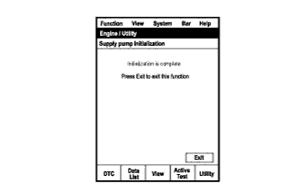
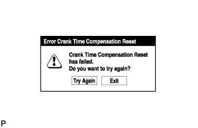
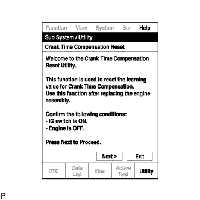
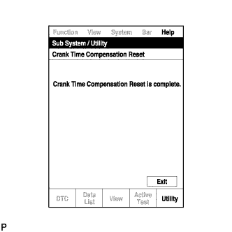

СИСТЕМА ECD (для моделей без DPF) > ИНИЦИАЛИЗАЦИЯ |
| ПОРЯДОК ВЫПОЛНЕНИЯ ИНИЦИАЛИЗАЦИИ НАГНЕТАЮЩЕГО НАСОСА |
|  |
Подсоедините портативный диагностический прибор к DLC3.
Установите замок зажигания в положение ON (ВКЛ).
Включите портативный диагностический прибор.
Войдите в следующие меню: Powertrain / Engine and ECT / Utility / Supply Pump Initialization.
Нажмите "Next".
|  |
Нажмите "Next".
|  |
Нажмите "Exit".
Запустите двигатель, чтобы убедиться в завершении инициализации. Если двигатель не запускается, повторите инициализацию сначала. (процедура "A")
Дайте двигателю поработать на холостом ходу в течение 1 мин при следующих условиях: (процедура "B")
Инициализация завершена.
| ФУНКЦИЯ СБРОСА ДАННЫХ КОМПЕНСАЦИИ ВРЕМЕНИ ПРОКРУЧИВАНИЯ КОЛЕНЧАТОГО ВАЛА |
|  |
Подсоедините портативный диагностический прибор к DLC3.
Установите замок зажигания в положение ON (ВКЛ).
Включите портативный диагностический прибор.
Войдите в следующие меню: Powertrain / Engine and ECT / Utility / Crank Time Compensation Reset.
|  |
После отображения первого экрана проверьте состояние автомобиля и нажмите "Next".
|  |
После отображения экрана, указывающего на завершение сброса, нажмите "Exit".